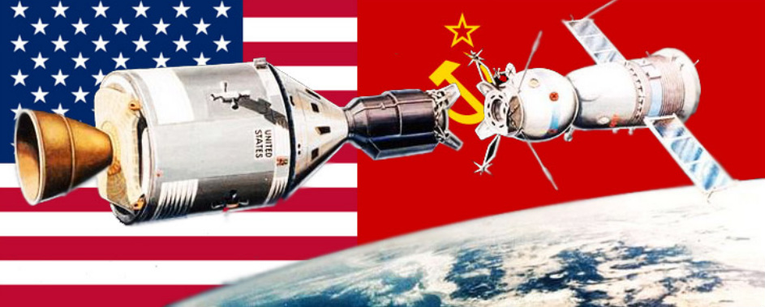

Ronald Reagan
As president, Ronald Reagan took a bold foreign policy stance against the Soviet Union, and communism in general.
President Reagan felt that the U.S. needed to have a strong military. He was willing to negotiate with the Soviets (and he did), but he wanted to do so from a position of strength. In 1983, Reagan proposed a missile defense system called Strategic Defense Initiative, or SDI. This was basically a missile defense shield in which lasers and other state-of-the-art technology would neutralize in-coming missiles. Although the project relied on technology that was not yet available, the project sparked fear in the Soviets and gave the U.S. an advantage in negotiating. The project was never fully deployed.
The United States and the Soviet Union also tried to fight the Cold War by demonstrating their power and technology. One example of this was the Arms Race where each side tried to have the best weapons and the most nuclear bombs. The idea was that a large stockpile of weapons would deter the other side from ever attacking. Another example was the Space Race, where each side tried to show that it had the better scientists and technology by accomplishing certain space missions first.
Reagan increased defense spending, which brought about an arms race with the Soviets. Each superpower was trying to build up a bigger and better military. The problem for the Soviets, however, is that their economy could not handle this surge in defense spending. The Soviet economy was damaged as a result. Reagan cultivated a relationship with Soviet leader, Michail Gorbachev, who came to power in 1985. Gorbachev was reform-minded, and his policies of perestroika (restructuring) and glasnost (transparency) give the Russian people a taste of freedom. Reagan encouraged Gorbachev in his reforms and the two leaders became relatively close. In 1987, Reagan visited West Berlin and gave a famous speech in which he demanded that Gorbachev "tear down this wall!".